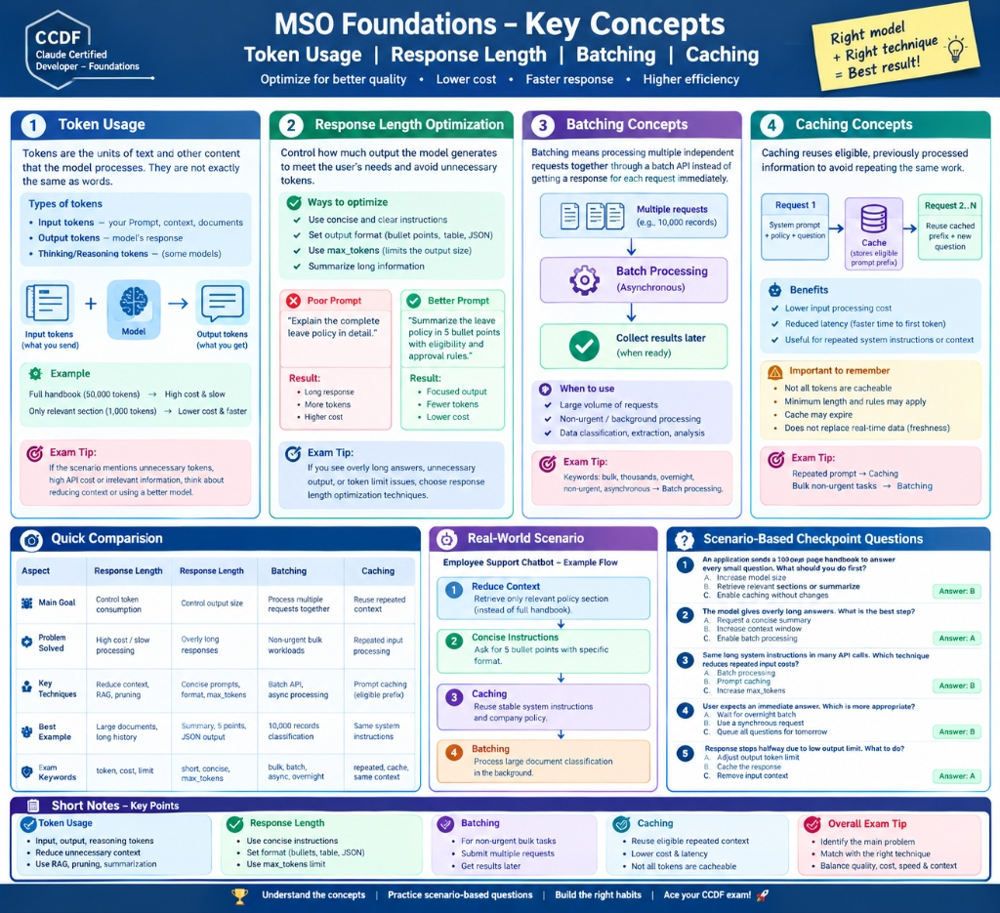

Trade-off matrix: Opus (deep reasoning), Sonnet (balanced enterprise default), Haiku (high-volume classification). LLMs are non-deterministic even at temperature=0.
Input tokens and reserved output (max_tokens) share the exact same window limit. 190,000 + 20,000 = 210,000 > 200,000 ceiling. Unnecessary context slows TTFT.
When formatting drifts across runs, multi-shot examples (2-3 concrete demonstrations) beat descriptive text. Delimiters separate data from instructions.
Current Claude models use adaptive thinking with the effort parameter for cost trade-off.
Fast mode delivers up to 2.5x token speed for latency-critical Opus debugging.
Writes cost +25% premium, reads get 90% discount with 5-min TTL. Caching is prefix-based: placing dynamic content before static knowledge invalidates the cache.
Message Batches API cuts costs by 50% for 24h asynchronous workloads. Handle 429/529 with exponential backoff and jitter. Pin model snapshots in production.
Passing score for the official CCDF certification is 70%.
